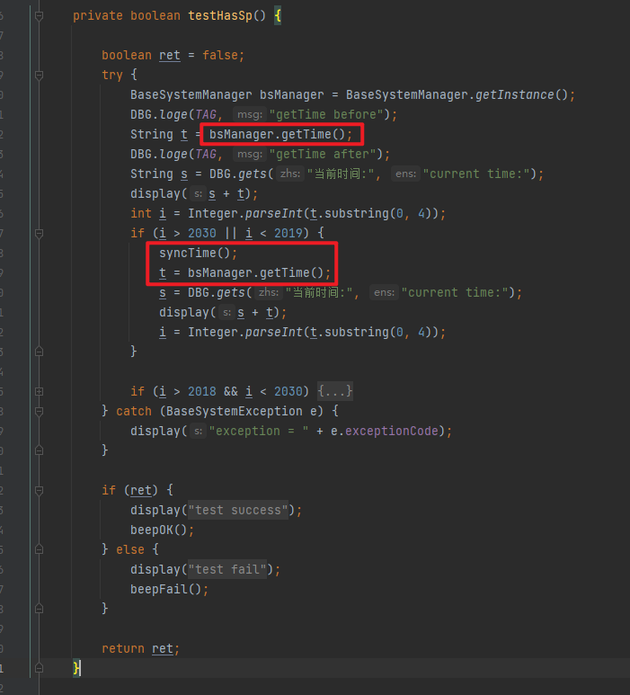
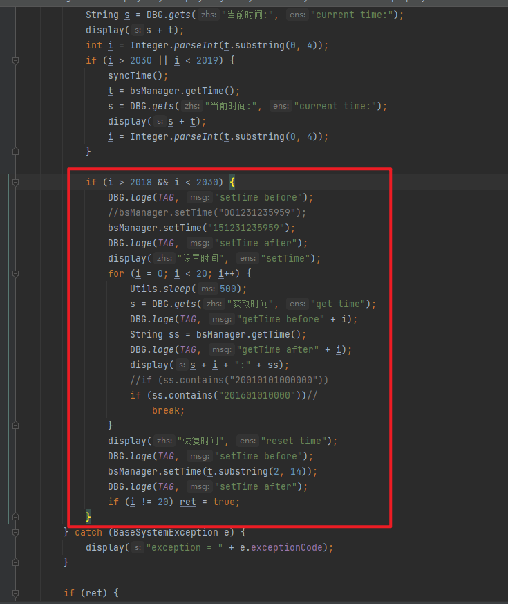

概要¶
项目需要发招标样机
关键字¶
ftest time,测试时间失败, gettime,getTime
ftest测试原理¶
没有详细去跟,看是看起来就是从sp获取时间,如果时间范围少于2019,大于2030,就同步电脑时间
如果时间, 在 2018到2030之间,就调用setTime接口,设置sp时间.
其实就是测试setTime跟getTime接口是否有问题


Log¶
看起来cong sp获取时间有问题
10-24 10:39:38.484 1865 2054 W PaxSPManager/SetApTimeService: paxTimeZone: Asia/Shanghai
10-24 10:39:38.484 1865 2054 W PaxSPManager/SetApTimeService: setTimeBasedTZ
10-24 10:39:38.485 1865 2054 W PaxSPManager/SetApTimeService: ++++++++++ap time millis = 1698115178485
10-24 10:39:38.485 1865 2054 W PaxSPManager/SetApTimeService: year = 2023 month=9 day=24 hour=10 minute=39 second=38
10-24 10:39:38.485 1865 2054 W PaxSPManager/SetApTimeService: +++gmtOffset=480
10-24 10:39:38.486 1865 2054 W PaxSPManager/SetApTimeService: +++newGmtOffset=480
10-24 10:39:38.514 671 2166 E spc : ros_dev_ctl(686) info:ret:0
10-24 10:39:38.516 1865 2054 W PaxSPManager/SetApTimeService: ++++++++++sp time millis = -125158329484
10-24 10:39:38.516 1865 2054 W PaxSPManager/SetApTimeService: year = 1966 month=0 day=13 hour=17 minute=47 second=50
10-24 10:39:38.673 747 1375 D GNSSMGT : parse_rmc_token: in RMC, fixStatus=V
10-24 10:39:38.831 1832 1832 D charge_mgr: <charge_check, 760> current mode:1
10-24 10:39:38.998 747 1381 D GNSSMGT : watchdog: PowerState[CP WORKED], gps_flag[2], readcount[361], idle time = 0, HeartCount = 0
调用流程¶
OsPaxApi.GetTime(tmpTime);
idh.code/paxdroid/external/pax/lib/libpaxapisvr/basesys/basesyssp.cpp
baseSysFuncs->_GetTime = sp_GetTime;
idh.code/paxdroid/external/pax/lib/librunthosspdev/spdevapi_Sys_Fun.c
runthos sp是调用这支文件,非runthos是另外文件
/**************************************************************
Function: Spdev_GetTime(uchar *str)
Called By: sp_GetTime
Input: str
Output: void
Others: 主副命令(00, 04)
Modify: 2021-09-30
**************************************************************/
void Spdev_GetTime(uchar *str)
{
struct timeval tv;
struct tm *timeinfo;
struct RTC_TIME time;
spc_get_time(&tv);
timeinfo = gmtime(&tv.tv_sec);
time.Year = 1900 + timeinfo->tm_year - 2000;
time.Month = timeinfo->tm_mon + 1;
time.Day = timeinfo->tm_mday;
time.Hour = timeinfo->tm_hour;
time.Minute = timeinfo->tm_min;
time.Second = timeinfo->tm_sec;
if(timeinfo->tm_wday != 0){
time.DayOfWeek = timeinfo->tm_wday;
}else {
time.DayOfWeek = 7;
}
str[0] = vByteToBcd(time.Year);
str[1] = vByteToBcd(time.Month);
str[2] = vByteToBcd(time.Day);
str[3] = vByteToBcd(time.Hour);
str[4] = vByteToBcd(time.Minute);
str[5] = vByteToBcd(time.Second);
str[6] = vByteToBcd(time.DayOfWeek);
}
idh.code/paxdroid/packages/PaxSPManager/src/com/pax/daemon/server/SetApTimeService.java
设置时间的时候会getNewTime ,如果返回复数,直接return,不会再跑下面的setSpTime
getNewTime函数会直接getSpTime获取时间,如果是少于0,就返回少于0
/**
* 根据新时区的时间，设置AP和SP的时间
* @return
*/
private boolean setTimeBasedTZ() {
long millis = getNewTime();
if(millis < 0){
return false;
}
if ((millis / 1000) < Integer.MAX_VALUE) {
PaxLog.w(TAG, "setCurrentTimeMillis");
boolean setTimeResult=false;
try {
String spStatus = SystemProperties.get(PaxProperties.PROPERTY_SP_INTEGRATED);
if(!spStatus.equals("1")){
if (isContainMethod(IALARMMANAGER_CLASS_NAME, SET_TIME_ORIGIN_CLASS_NAME)){
setTimeResult = setTimeOrigin(millis);
}else{
setTimeResult = SystemClock.setCurrentTimeMillis(millis);
}
}else{
if (isContainMethod(IALARMMANAGER_CLASS_NAME, SET_TIME_ORIGIN_CLASS_NAME)){
setTimeResult = setTimeOrigin(millis) && setSpTime(millis);
}else{
setTimeResult = SystemClock.setCurrentTimeMillis(millis) && setSpTime(millis);
}
}
} catch (Exception e) {
PaxLog.e(TAG, "Unable to set RTC", e);
}
PaxLog.w(TAG,"setCurrentTimeMillis result :" + setTimeResult);
PaxLog.w(TAG,"The current time is ="+Calendar.getInstance().getTimeInMillis() );
return setTimeResult;
} else {
PaxLog.e(TAG, "setCurrentTimeMillis failed");
return false;
}
}
//根据sp的时区，时间，计算出新时区对应的新时间
private long getNewTime() {
PaxLog.w(TAG, "++++++++++ap time millis = " + System.currentTimeMillis());
millisToDate(System.currentTimeMillis());
TimeZone zone = TimeZone.getTimeZone(SystemProperties.get(PAX_TIMEZONE_PROPERTY));
TimeZone newZone = TimeZone.getTimeZone(SystemProperties.get(TIMEZONE_PROPERTY));
int gmtOffset = zone.getOffset(System.currentTimeMillis());
PaxLog.w(TAG,"+++gmtOffset="+(gmtOffset / 60000));
int newGmtOffset = newZone.getOffset(System.currentTimeMillis());
PaxLog.w(TAG,"+++newGmtOffset="+(newGmtOffset / 60000));
long millis = getSpTime();
if ((millis / 1000) >= Integer.MAX_VALUE) {
return Integer.MAX_VALUE;
} else if(millis < 0){
return millis;
}
millis = millis - gmtOffset + newGmtOffset;
PaxLog.w(TAG,"+++++calculate new time is ++++++++");
millisToDate(millis);
return millis;